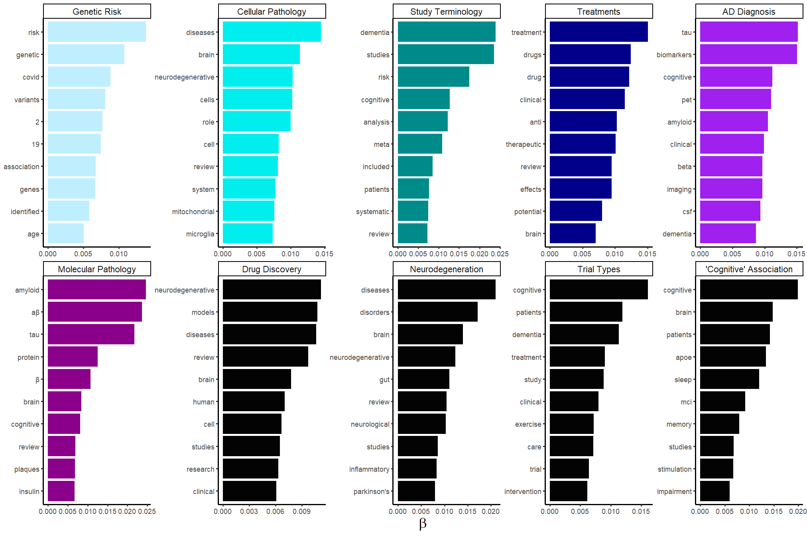
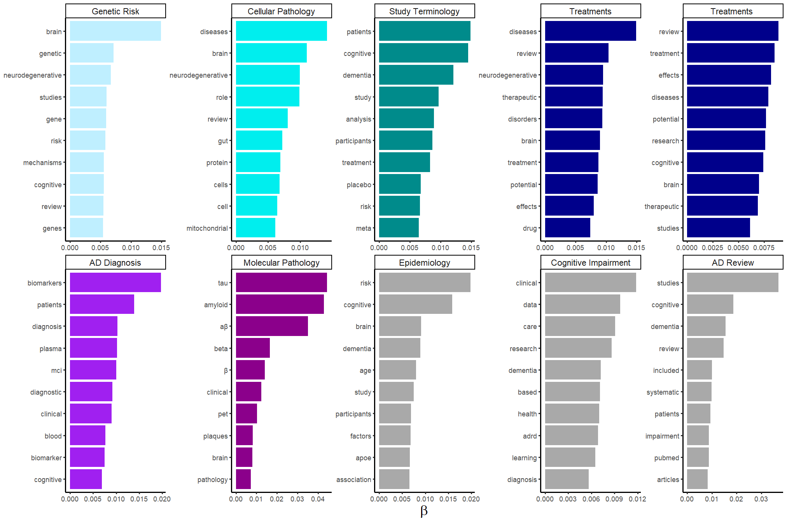

Comparison of Alzheimer’s Disease research themes before and after lecanemab approval using text analysis of scientific literature
Abstract
Every year thousands of scientific articles are published concerning the chronic neurodegenerative disorder and leading cause of dementia, Alzheimer’s disease (AD). Currently there are no treatments that cure AD, however the second anti-amyloid disease-modifying immunotherapy, lecanemab, was granted accelerated approval by the FDA on 06-01-2023. LDA topic modelling has previously been used to describe the AD research landscape, however the effect of novel treatments has not been explored. Using text mining and topic modelling, full abstract text between 01-01-2022 and 30-12-2023, and containing the MeSH term “Alzheimer’s Disease” from PubMed and preprint databases, were allocated to two corpuses determined by the accelerated approval date for lecanemab. Despite the frequency of literature increasing concerning terms relating to lecanumab, topics mentioning neurodegeneration, study terminology, and cellular and molecular pathologies have remained consistent surrounding its approval. Increasing per-topic-per-word probabilities for ‘tau’ and ‘placebo’ may suggest the research is shifting towards new therapeutic targets and advances in later phase clinical trials, however a longer follow up period will be necessary to validate these findings.
Introduction
Alzheimer’s Disease
Alzheimer’s disease (AD) is a chronic neurodegenerative disease affecting over 55 million people worldwide, and is the most common cause of dementia (1). The predominant symptoms of AD usually manifest after the age of 65 and include cognitive impairment, physical and emotional difficulties (2). The mechanisms determining the progression of AD are not fully understood, but many agree on the amyloid or tau hypotheses, originating from the presence of amyloid-beta (Aβ) plaques and neurofibrillary tau tangles frequently found in the brains of patients with AD (3,4). These abnormal proteins lead to disruptions in neuronal signalling pathways and mediate cell death (5,6). Degeneration of the hippocampus, which is a region vital for memory, and cortical atrophy can leads to cognitive decline seen in AD (7,8).
AD diagnosis requires the presence of both amyloid and tau pathologies, and signs of neuroinflammation, neuronal death and brain atrophy (9). Biomarkers of neuroinflammation can be found in cerebrospinal fluid (CSF) and blood plasma (10) or using brain imaging such as positron emission tomography (PET) (11). Brain atrophy can be measured with techniques such as magnetic resonance imaging (MRI) (12). Abnormal protein deposits manifest in the brain before the onset of symptoms, therefore early detection is required to prevent the spread of AD pathologies and identify the right stage to administer treatments.
AD also has multiple risk factors suggesting age, epigenetic modifiers, infectious agents, and diet all contribute to the development of AD (13,14). An epidemiological comparison of people aged 65 years and older from two different decades, suggested that the prevalence of AD is decreasing due to an improvement in other lifestyle factors (15). Observational studies are useful to identify other factors that are important in the search to find treatments to target the key AD pathologies.
Treatments for AD
There are currently no therapies or interventions that can cure AD, but several approved treatments exist to manage cognitive impairment, to alleviate symptoms, and enhance the overall quality of life for patients. Acetylcholinesterase inhibitors (AchE) aim to increase the levels of the neurotransmitter acetylcholine which are attenuated during the pathologies of AD and associated with the loss of cholinergic neurons (16). Whilst AchEs provide many benefits to treat the symptoms of AD, they do not delay or stop the progression of the disease and the effects may only last for 12-24 months (17). Mementine is a NMDA receptor antagonist which inhibits glutamate mediated neurotoxicity caused by neuronal cell death during AD progression (18). Memantine has been approved for moderate severe to severe AD, however the drug has not been shown to slow the progression of the disease or prove effective in mild-to-moderate stages of the disease (19,20).
Two anti-amyloid human monoclonal immunotherapies, aducanumab and lecanemab, have recently been granted approval by the United States Food and Drug Administration (US FDA) which aim to reduce the Aβ plaques in the AD brain (21,22). Aducanumab approval was rejected by the European Medicines Agency (EMA) due to the conflicting phase III clinical trial evidence and concerns over patient safety (23,24), whereas lecanumab is currently under review by the EMA for approval (25). Aducanemab targets the soluble Aβ oligomers and insoluble fibrils whereas lecanumab targets the soluble Aβ protofibrils, but both led to the development of severe adverse events including amyloid-related imaging abnormalities (ARIA) (26,27). These results suggest further research is needed to understand the full molecular causes of AD to help find safe yet effective treatments.
Recent comprehensive reviews have identified a shift in research with more Phase I studies being conducted and four more anti-amyloid monoclonal antibody treatments having completing or currently undergoing Phase III clinical trials (28,29). These trials are involving more patients with early onset AD and mild cognitive impairment (MCI) to help develop preventative therapies. Global estimates for people living with preclinical AD or positive for AD pathology biomarkers were 69 and 315 million, respectively (30), therefore increasing research focus on these patient populations is imperative to slow the progression of the disease. These reviews have not been updated since the accelerated approval of lecanemab, therefore we aim to identify whether there is a transition in research topics with the emergence of these novel disease-modifying treatments to target the underlying pathologies of AD rather than treating the symptoms.
Text Mining and Topic Modelling in AD Research
Thousands of articles are released every year concerning AD and the Alzheimer’s Association publishes an annual report to describe the public health impact of AD for caregivers and society (2). Systematic reviews and meta-analyses, however, are time consuming and labour intensive, and pose a significant challenge to updating the current understandings in the research literature (31). Topic modelling, an unsupervised machine learning technique, can find patterns and relationships within natural language data, and could provide an automated and unbiased overview of research text. The most common topic modelling method is Latent Dirichlet Allocation (LDA) which assumes, for unstructured text data like research publication, that each document is made up of a number of topics and that each topic is made up of a collection of words (32). Each LDA topic is represented as a probability of words within a topic and a probability of topics within each document, which each follow a Dirichlet distribution.
In silico topic modelling has been used for various applications relating to AD, including identifying novel biomarkers (33), and drug repurposing (34). LDA has also been used to describe trends in the research landscape, however this has only been achieved until 01-01-2022 (35,36). Guan et al (36) identified fourteen clusters from abstract text from 95,876 papers published between 2007 and 2016 with the entry term ‘Alzheimer’s Disease’. Topics included the burden of AD such as ‘cost’ and ‘health’ as well as protein terminology such as ‘APP’ which related to the amyloid-precursor protein which is cleaved into amyloid-beta via the amyloidogenic pathway (37). Martinelli (35) performed a nine-topic LDA model and identified five mechanistic themes, one topic relating to AD diagnosis and three concerning treatments. Whilst both descriptive analyses using LDA topic modelling have identified key topics in AD research, further research was suggested to validate their findings.
To the best of our knowledge, no studies have described the AD research landscape since this period and explored whether the emergence of newly approved immunotherapy treatments have affected research themes. We therefore aimed to comprehensively characterise AD research through the period that the AD drug, lecanemab, underwent accelerated approval for early AD on 06-01-2023 . We hypothesised that new treatments targeting the pathophysiological changes in patients with AD represent a major paradigm shift in AD research. We proposed that LDA topic models could summarise the latest research and help identify distinct thematic changes in the literature. Furthermore, this method could help understand the complexities of AD and be translated to other neurodegenerative diseases to study the impact of emerging novel treatments.
Methods
A full summary of the methodology is provided in Figure 1. All data analysis and visualisations were done in R version 4.3.2 using tidyverse packages (38) unless otherwise stated.
Data Acquisition
Due to accessing constraints, abstracts represent the only document content for this study. Titles, full abstract text, and publication date were obtained from the National Center for Biotechnology Information (NCBI) datasbase, PubMed, using the inclusion criteria described in Table 1, and accessed through Rismed (39) on 18-02-2024. Results from PubMed were combined with publications from the preprint data sources, bioRxiv and medXriv, using medrxiv (40). Entries were assigned Medical Subject Headings (MeSH) which identified health-related terms within each document, therefore classifying articles according to their subject nature. An additional dataset was generated for abstracts containing the associated terminology for the AD drug lecanemab: ‘lecanemab’, ‘leqembi’ ‘BAN2401’, and ‘mAb158’.
| Criteria | Filter Applied |
|---|---|
| MeSH Term | ‘Alzheimer’s Disease’ |
| Title and/or Abstract Text | ‘Alzheimer’s Disease’ ‘AD’ |
| Article Type | “Books” “Case Reports” “Clinical Study” “Clinical Trial” “Controlled Clinical Trial” “Meta-analysis” “Randomised Controlled Trial” “Review” “Systematic Review” |
| Publication Date | 1st January 2022 to 1st January 2024 inclusive |
| Language | English |
litsearchR
To reassure us that the PubMed search query encapsulated all literature, we used litsearchr to automate identifying search terms and reduce bias in the initial keyword selection by using co-occurrence networks (41). Citations from the PubMed results, using the previous search criteria in Table 1, were read into R. The combined unique keyword and titles, as not all articles have keywords, for each result were collected. To ensure only the most relevant terms were searched, stop words were removed as these contained very frequent terms that provided no significant information, such as ‘the’, ‘and’ or ‘a’. The minimum frequency of words for keywords and title was then set to n = 50 and n = 75, respectively. A document-frequency matrix of each search term in each article was created and computed into a co-occurrence network using create_network (42). The potential search terms were ranked using strength (43) (44) and the change point method calculated the optimal cutoff positions where the strength of the next strongest term was greater than the previous one.
Data Preprocessing
Abstracts and their metadata were categorised into two corpuses: ‘Pre-Lecanemab Accelerated Approval’ and ‘Post-Lecanemab Accelerated Approval’, based on their publication date relative to the date of lecanemab’s accelerated early approval, 06-01-2023 (22). Full abstract text was tokenised into one-, two- and three-word tokens using tidytext (45) (Figure 2 (a)). Stop words, combined with the words frequent to the unigram analysis, “alzheimer’s” and “ad”, were then removed (Figure 2 (b)). To prevent the different spellings of the same phrase from being counted multiple times, similar bigrams and trigrams were mapped to the same variable. For example, ‘amyloid β, ‘beta amyloid’, and ‘amyloid aβ’ were all mapped to ‘amyloid beta’, and ‘mild cognitive impairments’ and ‘cognitive impairment mci’ were mapped to ‘mild cognitive impairment’. Additionally, for bigrams originating from trigrams, mapping to the first two terms was used or mapping to an acronym, for example ‘central nervous’ and ‘system cns’ were mapped to’cns’.


Data Analysis
Frequency Analysis
The frequency of all eligible abstracts published per month as well as the frequency of publications containing the associated terminology for the AD drug lecanemab were visualised.
After tokenisation, the top 15 most frequent unigrams were determined for each dataset. The top 15 most frequent bigrams and trigrams were also determined due to many unigrams being associated with pairs or triplets of words. For example, “mild cognitive impairment” relates to a neurological condition, whereas the words “mild”, “cognitive” and “impairment” have ambiguous connotations individually. A generalised linear model (GLM) was used to determine whether there was a significant change in word usage per months for the most frequent unigrams shared by both corpuses.
Topic Modelling
A document term matrix (dtm) was constructed for each dataset, indicating each word’s term frequency (tf), which is a measure of how often a word appears in each abstract. To determine if a statistical model could distinguish between the text corpuses surrounding the accelerated approval date of lecanemab, a two-topic Latent Dirich Allocation (LDA) model (32) was applied to the dtm using topicmodels (46). The per-document-per-topic probabilities (γ) was extracted to show the proportion of words generated in each topic and how often these words appear in either corpuses.
Two ten-topic LDA models were also created, one for each text corpuses, to determine the most frequent topics. In each model the abstracts were considered mixtures of topics and each topic was considered a mixture of words. The per-topic-per-word probabilities (β) were extracted and the top 10 terms most common words found in each topic were visualised. Topic titles were manually created and validated by a neuroscience expert.
Results and Discussion
The final dataset contained 6744 abstracts that were published between 01-01-2022 and 30-12-2023 (Figure 3).
Search Query Refinement Identified the Term ‘alzheimer’
Our initial search query was refined using litsearchr (41) to determine the most important terms to the articles ranked by their strength (Figure 4). We disregarded ‘alzheimer’s disease’ as this MeSH term was included in the original search query, but we updated the PubMed search query with ‘alzheimer’ (Table 1). We omitted the unigram ‘disease’ as this term was too broad and may have encapsulated articles concerning other irrelevant neurodegenerative diseases into our query. We inclued English articles only, which are estimated to be about 75% of the scientific literature (47).
Due to our search strategy, a lot of papers containing the MeSH term ‘Alzheimer’s disease’ may have been mentioned as a collective with other neurodegenerative diseases. MeSH terms are added manually to articles in PubMed, therefore there could be an interpretive bias when authors add these to their publications. We tried to avoid this by filtering the titles and abstracts of PubMed articles to also contain the term ‘alzheimer’s disease’, ‘ad’ or ‘alzheimer’. Similarly when MeSH terms were not available for the bioRxiv and medRxv databases, we used a similar search strategy to filter titles and abstract text to contain the term ‘alzheimer’s disease’ or ‘alzheimer’, or ‘ad’ and ‘alzheimer’s disease’. This filtering may have biased our dataset as abstracts not containing these search terms were omitted despite the full article text potentially concerning AD, however abstract text has previously been used to identify themese in AD literature (36). We would, however, suggest that further studies use full article text to help validate our findings.

Increased lecanemab publication frequency did not impact AD research topics
Lecanemab received accelerated and traditional approval in 2023 (22,48), however we did not find any variability in the overall frequency of literature published containing the MeSH term ‘Alzheimer’s Disease’, with 3,468 abstracts published before and 3,276 abstracts published after the accelerated approval of lecanemab (Figure 3, Figure 5 (a)). Despite the frequency of publications containing the terms associated with the AD drug lecanemab exponentially increasing in 2023 (Figure 5 (b)), there was no significant difference between the per-document-per-topic probabilities (γ) for the two-topic LDA models (Figure 6). This suggests that the increase in abstracts concerning lecanemab did not separate the literature into two distinct topics based on differing themes.


One reason for there not being any statistical significance between the per-document-per-topic probabilities could be due to the two-year time period being too short to account for a change in the research landscape, as previous studies have used a five-year or ten-year time period to characterise topics in AD literature (36). Whilst no studies have compared LDA topics in two time periods, changes in AD research may take multiple years to manifest. Further research should explore a larger time period after the accelerated approval of lecanemab to conclude whether a change in the research literature can be found using topic models.

“Neurodegeneration” and “cognitive impairment” are associated with AD research
Despite the full abstract dataset not significantly splitting into two distinct topics, we suggested this was because the language was very similar between the two corpses. We therefore explored the most common n-grams frequencies. Fourteen of the fifteen most frequent unigrams were shared between the two corpuses (Figure 7 (a)), however there were no significant differences between the unigram frequencies between the two time periods (Figure 7 (d)). Similarly, fourteen of the fifteen most frequent bigrams and trigrams were shared between the two corpuses (Figure 7 (b), Figure 7 (c)). This suggested that the word usage has remained consistent and indicated that the introduction of a novel anti-amyloid therapy may not have changed the research landscape. We used LDA topic modelling to see whether the terms may be distributed differently in different topics in each corpus. Identifying ten topics per corpus and the top ten keywords per topic, we found topics concerning neurodegeneration, study terminology or related to AD pathology were shared by the two corpuses (Figure 8).


‘Disease’ was the most frequent unigram in both corpuses (Figure 7 (a)) and was included with ‘neurodegenerative disease’, ‘Parkinson’s disease [pd]’ and ‘Huntington’s disease [hd]’, which were among the most frequent bigrams and trigrams (Figure 7 (b), Figure 7 (c)). Similar topics in both corpuses were classified by terms co-occurring with ‘cognitive’, included ‘memory’, ‘sleep’, ‘impairment’ and ‘brain’ or ‘learning’ and ‘dementia’. While ’neurodegenerative’ was common to three topics per corpus, ’parkinson’s’ was the only specific disease observed co-occurring in a topic in the earlier corpus, and none in the later corpus. Parkinson’s disease (PD) is another common neurodegenerative disease caused by neuronal loss and affects coordination and motor skills. The drug development pipeline for PD contains fewer trials than for AD, however 36 new studies for PD were initiated in the year prior to lecanemab which could attribute to its occurrence in this topic corpus (28,49).
Genetic risk of APOE in AD
Genetic risk as well as other AD-related risk factors were common to LDA topics in both corpuses. The terms ‘genes’, ’genetic’, and ’risk’ were shared by both models, however ‘covid’ and ‘19’ were unique to the earlier corpus (Figure 8). A genetic link has been hypothesised between having COVID-19 and developing AD (50,51), and we observed ‘covid 19’ and ‘sars cov 2’ were also among the most frequent bigram and trigrams (Figure 7 (b), Figure 7 (c)). The frequency of COVID-19-related n-grams was greater in the earlier corpus, however we cannot conclude whether this is a consequence of the large volume of COVID-19-related research published during the pandemic, or a causal links to AD.
The rare dominantly inherited AD (DIAD) is caused by mutations in the amyloid precursor protein (APP) gene and genes for the presenilin 1 and presenilin 2 proteins (52). We only found ‘amyloid precursor protein’ referenced in the n-gram analysis, however the gene ‘APOE’ occurred in LDA topics in both corpuses (Figure 7 (c), Figure 8). Apolipoprotein E (APOE) is the most significant risk gene for late-onset AD and associated with age-related cognitive decline (53,54).


Tau research may be increasing after lecanemab accelerated approval
Topics containing study terminology were common to both corpuses, however the unigram ‘placebo’ was unique to the later corpus (Figure 8). The frequency of the trigram ‘randomised controlled trials’ was greater in the later corpus (Figure 7 (c)), despite fewer abstracts being in this dataset (Figure 3). This could suggest an increase in the number of randomised clinical trials (RCT) after lecanemab received accelerated approval . Placebos are used when there is no known or FDA-approved therapy that can be tolerated by patients, therefore as AD does not have a standard of care treatment to cure the disease, a placebo may be used in RCTs. This is consistent with the trends observed in Huang et al (29), which suggested an increase in Phase III clinical trials for anti-amyloid therapies in 2023 which encompassed the traditional approval date of lecanemab by the FDA in July 2023 from the CLARITY AD clinical trial (48).
Multiple topics in the earlier corpus referenced study terminology and trial types, either relating to pre-clinical drug discovery in ‘cells’ and ‘models’ or clinical studies such as ‘trials’, ‘human’. There were two topics relating to treatments after the accelerated approval of lecanemab and only one before, however language use was similar with the mention of ‘drug’, ‘potential’, and ’effects’ being observed (Figure 8). Whilst topics in the AD literature have previously mentioned clinical outcomes (35), mention of randomised clinical trials and placebo-controlled trials have not emerged using LDA topic models. There was an increase in the beta-value for the terms ’tau’, ’amyloid’, and ‘aβ’ in the topic concerning molecular pathology after the accelerated approval of lecanemab. Clinical trials including disease-modifying therapies targeting tau have increased with 14 active trials at the beginning of 2023 (28), therefore research may be shifting to the other pathological hypotheses of AD to identify treatments.
Immunological and metabolic research in AD
As the cause of AD is not full understood, topics concerning the molecular pathology, specifically referencing ‘amyloid-beta’ and ‘tau’, were found and highlighted the importance of these hypotheses. Topics concerning cellular pathology and mentioning ‘migroglia’ and ‘mitochondrial’ may referred to the increased neuroinflammation relating to the recruitment of immune cells in AD (Figure 8). We also found mentions of ‘oxidative stress’ and ’reactive oxygen species’ in both corpuses in the n-gram analysis (Figure 7 (b)). Mitochondria produce reactive oxygen species and initiate neuronal cell death in AD (55). Microglia are important as part of the innate immune response to remove Aβ, however tau pathologies may induce an inflammatory state in microglia causing the phagocytosis of synapses and secretion of neurotoxic cytokines (56,57).
The term ‘insulin’ was only found in the earlier corpus (Figure 8), however ’type 2 diabetes’ was one of the most common trigrams for both corpuses (Figure 7 (c)). AD has been referred to as type 3 diabetes due to the rapid growth of literature concerning brain insulin resistance and experimental evidence has shown insulin sensitiser treatments may help attenuate learning deficits (58–61). Many epidemiological studies have suggested T2DM may be increasing the risk of AD, leading to the lower brain insulin levels resulting in decreased clearance of amyloid-beta (62,63). Despite this growing area of research, observations between non-demented participants and AD patients with T2DM have not been able to show a significant difference in amyloid accumulation (64). Whilst we cannot conclude from our results whether this suggests a shift in research focusing on T2DM and its metabolic link to AD, we have observed that literature around the approval of lecanemab does concern multiple metabolic and immunological changes relating to AD.
An additional topic identified words relating to ‘AD Reviews’ including ‘article’, ‘systematic’, and ‘PubMed’ alluding to the source of the studied material. This may be derived from only including abstract text which only provides a summary of the larger article text. Abstract text has been used previously in LDA topic modelling for AD research due to its concise description of only the necessary content of the paper (36). LDA topic modelling relies on counts of words to determine their relative abundance to the overall text and normalises frequently occurring words (32). Further research should replicate our methodology using full article text to ensure all major terms are included.
Our findings suggest that the introduction of lecanemab has not had a significant impact on the research landscape of Alzheimer’s disease in the years either side of its accelerated approval. While in silico methods of literature reviewing are useful to disseminate large quantities of text data, we would suggest they are not as robust more sophisticated text analysis methods using artificial intelligence. We do however think that this automated approach could help provide an overview of major topics and increase the efficiency of understanding the large volume of studies in the AD literature. We hope this could help in the efforts to find a cure for this devastating disease.
Acknowledgements
I would like to thank my supervisor Emma Rand for her constant support and guidance throughout my project. I would also like to dedicate this project to my late granddad Alan Scrimshire who passed away on the 31st March 2023 after fighting a five year battle with Alzheimer’s Disease. I hope this project highlights the complexity of the disease and the vast efforts being undertaken to find a cure.
References
1.
World Health Organization. Dementia. https://www.who.int/news-room/fact-sheets/detail/dementia; 2023.
2.
2023 Alzheimer’s disease facts and figures. 2023 alzheimer’s disease facts and figures. Alzheimers Dement. 2023 Apr;19(4):1598–695.
3.
Villemagne VL, Burnham S, Bourgeat P, Brown B, Ellis KA, Salvado O, Szoeke C, Macaulay SL, Martins R, Maruff P, Ames D, Rowe CC, Masters CL, Australian Imaging Biomarkers and Lifestyle (AIBL) Research Group. Amyloid \(\beta\) deposition, neurodegeneration, and cognitive decline in sporadic alzheimer’s disease: A prospective cohort study. Lancet Neurol. 2013 Apr;12(4):357–67.
4.
Iaccarino L, Tammewar G, Ayakta N, Baker SL, Bejanin A, Boxer AL, Gorno-Tempini ML, Janabi M, Kramer JH, Lazaris A, Lockhart SN, Miller BL, Miller ZA, O’Neil JP, Ossenkoppele R, Rosen HJ, Schonhaut DR, Jagust WJ, Rabinovici GD. Local and distant relationships between amyloid, tau and neurodegeneration in alzheimer’s disease. Neuroimage Clin. 2018;17:452–64.
5.
Li Q, Liu Y, Sun M. Autophagy and alzheimer’s disease. Cell Mol Neurobiol. 2017 Apr;37(3):377–88.
6.
Dong Y, Yu H, Li X, Bian K, Zheng Y, Dai M, Feng X, Sun Y, He Y, Yu B, Zhang H, Wu J, Yu X, Wu H, Kong W. Hyperphosphorylated tau mediates neuronal death by inducing necroptosis and inflammation in alzheimer’s disease. J Neuroinflammation. 2022 Aug;19(1):205.
7.
Josephs KA, Dickson DW, Tosakulwong N, Weigand SD, Murray ME, Petrucelli L, Liesinger AM, Senjem ML, Spychalla AJ, Knopman DS, Parisi JE, Petersen RC, Jack CR Jr, Whitwell JL. Rates of hippocampal atrophy and presence of post-mortem TDP-43 in patients with alzheimer’s disease: A longitudinal retrospective study. Lancet Neurol. 2017 Nov;16(11):917–24.
8.
Dickerson BC, Bakkour A, Salat DH, Feczko E, Pacheco J, Greve DN, Grodstein F, Wright CI, Blacker D, Rosas HD, Sperling RA, Atri A, Growdon JH, Hyman BT, Morris JC, Fischl B, Buckner RL. The cortical signature of alzheimer’s disease: Regionally specific cortical thinning relates to symptom severity in very mild to mild AD dementia and is detectable in asymptomatic amyloid-positive individuals. Cereb Cortex. 2009 Mar;19(3):497–510.
9.
Garcı́a-Morales V, González-Acedo A, Melguizo-Rodrı́guez L, Pardo-Moreno T, Costela-Ruiz VJ, Montiel-Troya M, Ramos-Rodrı́guez JJ. Current understanding of the physiopathology, diagnosis and therapeutic approach to alzheimer’s disease. Biomedicines. 2021 Dec;9(12).
10.
Janeiro MH, Ardanaz CG, Sola-Sevilla N, Dong J, Cortés-Erice M, Solas M, Puerta E, Ramı́rez MJ. Biomarcadores en la enfermedad de alzheimer. Advances in Laboratory Medicine / Avances en Medicina de Laboratorio. 2021 Mar;2(1):39–50.
11.
Marcus C, Mena E, Subramaniam RM. Brain PET in the diagnosis of alzheimer’s disease. Clin Nucl Med. 2014 Oct;39(10):e413-22; quiz e423-6.
12.
Odusami M, Maskeliūnas R, Damaševičius R, Krilavičius T. Analysis of features of alzheimer’s disease: Detection of early stage from functional brain changes in magnetic resonance images using a finetuned ResNet18 network. Diagnostics (Basel). 2021 Jun;11(6).
13.
A Armstrong R. Risk factors for alzheimer’s disease. Folia Neuropathol. 2019;57(2):87–105.
14.
Henderson AS. The risk factors for alzheimer’s disease: A review and a hypothesis. Acta Psychiatr Scand. 1988 Sep;78(3):257–75.
15.
Matthews FE, Arthur A, Barnes LE, Bond J, Jagger C, Robinson L, Brayne C, Medical Research Council Cognitive Function and Ageing Collaboration. A two-decade comparison of prevalence of dementia in individuals aged 65 years and older from three geographical areas of england: Results of the cognitive function and ageing study I and II. Lancet. 2013 Oct;382(9902):1405–12.
16.
Colović MB, Krstić DZ, Lazarević-Pašti TD, Bondžić AM, Vasić VM. Acetylcholinesterase inhibitors: Pharmacology and toxicology. Curr Neuropharmacol. 2013 May;11(3):315–35.
17.
Courtney C, Farrell D, Gray R, Hills R, Lynch L, Sellwood E, Edwards S, Hardyman W, Raftery J, Crome P, Lendon C, Shaw H, Bentham P, AD2000 Collaborative Group. Long-term donepezil treatment in 565 patients with alzheimer’s disease (AD2000): Randomised double-blind trial. Lancet. 2004 Jun;363(9427):2105–15.
18.
Long JM, Holtzman DM. Alzheimer disease: An update on pathobiology and treatment strategies. Cell. 2019 Oct;179(2):312–39.
19.
Folch J, Busquets O, Ettcheto M, Sánchez-López E, Castro-Torres RD, Verdaguer E, Garcia ML, Olloquequi J, Casadesús G, Beas-Zarate C, Pelegri C, Vilaplana J, Auladell C, Camins A. Memantine for the treatment of dementia: A review on its current and future applications. J Alzheimers Dis. 2018;62(3):1223–40.
20.
Rogawski MA, Wenk GL. The neuropharmacological basis for the use of memantine in the treatment of alzheimer’s disease. CNS Drug Rev. 2003 Sep;9(3):275–308.
21.
Center for Drug Evaluation, Research. FDA’s decision to approve new treatment for alzheimer’s disease. https://www.fda.gov/drugs/our-perspective/fdas-decision-approve-new-treatment-alzheimers-disease; FDA; 2023.
22.
Office of the Commissioner. FDA grants accelerated approval for alzheimer’s disease treatment. https://www.fda.gov/news-events/press-announcements/fda-grants-accelerated-approval-alzheimers-disease-treatment; FDA; 2023.
23.
Alexander GC, Emerson S, Kesselheim AS. Evaluation of aducanumab for alzheimer disease: Scientific evidence and regulatory review involving efficacy, safety, and futility. JAMA. 2021 May;325(17):1717–8.
24.
Mahase E. Aducanumab: European agency rejects alzheimer’s drug over efficacy and safety concerns. BMJ. 2021 Dec;375:n3127.
26.
Sevigny J, Chiao P, Bussière T, Weinreb PH, Williams L, Maier M, Dunstan R, Salloway S, Chen T, Ling Y, O’Gorman J, Qian F, Arastu M, Li M, Chollate S, Brennan MS, Quintero-Monzon O, Scannevin RH, Arnold HM, Engber T, Rhodes K, Ferrero J, Hang Y, Mikulskis A, Grimm J, Hock C, Nitsch RM, Sandrock A. The antibody aducanumab reduces A\(\beta\) plaques in alzheimer’s disease. Nature. 2016 Sep;537(7618):50–6.
27.
Brenman JE. Lecanemab in early alzheimer’s disease. N Engl J Med. 2023 Apr;388(17):1631.
28.
Cummings J, Zhou Y, Lee G, Zhong K, Fonseca J, Cheng F. Alzheimer’s disease drug development pipeline: 2023. Alzheimers Dement. 2023 May;9(2):e12385.
29.
Huang L-K, Kuan Y-C, Lin H-W, Hu C-J. Clinical trials of new drugs for alzheimer disease: A 2020–2023 update. J Biomed Sci. 2023 Oct;30(1):83.
30.
Gustavsson A, Norton N, Fast T, Frölich L, Georges J, Holzapfel D, Kirabali T, Krolak-Salmon P, Rossini PM, Ferretti MT, Lanman L, Chadha AS, Flier WM van der. Global estimates on the number of persons across the alzheimer’s disease continuum. Alzheimers Dement. 2023 Feb;19(2):658–70.
31.
Higgins JPT. Cochrane handbook for systematic reviews of interventions. 2nd ed. Higgins J, Thomas J, editors. Hoboken, NJ: Wiley-Blackwell; 2019. (Wiley cochrane series).
32.
Blei DM, Ng AY, Jordan MI. Latent dirichlet allocation. https://www.jmlr.org/papers/volume3/blei03a/blei03a.pdf?ref=https://githubhelp.com; 2003.
33.
Greco I, Day N, Riddoch-Contreras J, Reed J, Soininen H, Kłoszewska I, Tsolaki M, Vellas B, Spenger C, Mecocci P, Wahlund L-O, Simmons A, Barnes J, Lovestone S. Alzheimer’s disease biomarker discovery using in silico literature mining and clinical validation. J Transl Med. 2012 Oct;10:217.
34.
Nian Y, Hu X, Zhang R, Feng J, Du J, Li F, Bu L, Zhang Y, Chen Y, Tao C. Mining on alzheimer’s diseases related knowledge graph to identity potential AD-related semantic triples for drug repurposing. BMC Bioinformatics. 2022 Sep;23(Suppl 6):407.
35.
Martinelli DD. Evolution of alzheimer’s disease research from a health-tech perspective: Insights from text mining. International Journal of Information Management Data Insights. 2022 Nov;2(2):100089.
36.
Guan R, Wen X, Liang Y, Xu D, He B, Feng X. Trends in alzheimer’s disease research based upon machine learning analysis of PubMed abstracts. Int J Biol Sci. 2019 Aug;15(10):2065–74.
37.
Hampel H, Hardy J, Blennow K, Chen C, Perry G, Kim SH, Villemagne VL, Aisen P, Vendruscolo M, Iwatsubo T, Masters CL, Cho M, Lannfelt L, Cummings JL, Vergallo A. The Amyloid-\(\beta\) pathway in alzheimer’s disease. Mol Psychiatry. 2021 Oct;26(10):5481–503.
38.
Wickham H, Averick M, Bryan J, Chang W, McGowan LD, François R, Grolemund G, Hayes A, Henry L, Hester J, Kuhn M, Pedersen TL, Miller E, Bache SM, Müller K, Ooms J, Robinson D, Seidel DP, Spinu V, Takahashi K, Vaughan D, Wilke C, Woo K, Yutani H. Welcome to the tidyverse. 2019;4:1686.
39.
Kovalchik S. RISmed: Download content from NCBI databases. 2021;
40.
McGuinness L, Schmidt L. Medrxivr: Accessing and searching medRxiv and bioRxiv preprint data in R. J Open Source Softw. 2020 Oct;5(54):2651.
41.
Grames EM, Stillman AN, Tingley MW, Elphick CS. An automated approach to identifying search terms for systematic reviews using keyword co‐occurrence networks. Methods Ecol Evol. 2019 Oct;10(10):1645–54.
42.
Barrat A, Barthélemy M, Pastor-Satorras R, Vespignani A. The architecture of complex weighted networks. Proc Natl Acad Sci U S A. 2004 Mar;101(11):3747–52.
43.
Csardi G, Nepusz T. The igraph software package for complex network research. 2006;Complex Systems:1695.
44.
Csardi G, Nepusz T. The igraph software package for complex network research. 2006;Complex Systems:1695. Available from: https://igraph.org
45.
Silge J, Robinson D. Tidytext: Text mining and analysis using tidy data principles in R. 2016;1.
46.
Grün B, Hornik K. Topicmodels: An R package for fitting topic models. J Stat Softw. 2011 May;40:1–30.
47.
Montgomery SL. Does science need a global language?: English and the future of research. University of Chicago Press; 2013.
48.
Office of the Commissioner. FDA converts novel alzheimer’s disease treatment to traditional approval. https://www.fda.gov/news-events/press-announcements/fda-converts-novel-alzheimers-disease-treatment-traditional-approval; FDA; 2023.
49.
McFarthing K, Buff S, Rafaloff G, Fiske B, Mursaleen L, Fuest R, Wyse RK, Stott SRW. Parkinson’s disease drug therapies in the clinical trial pipeline: 2023 update. J Parkinsons Dis. 2023;13(4):427–39.
50.
Matveeva N, Kiselev I, Baulina N, Semina E, Kakotkin V, Agapov M, Kulakova O, Favorova O. Shared genetic architecture of COVID-19 and alzheimer’s disease. Front Aging Neurosci. 2023 Oct;15:1287322.
51.
Baranova A, Cao H, Zhang F. Causal effect of COVID-19 on alzheimer’s disease: A mendelian randomization study. J Med Virol. 2023 Jan;95(1):e28107.
52.
Bekris LM, Yu C-E, Bird TD, Tsuang DW. Genetics of alzheimer disease. J Geriatr Psychiatry Neurol. 2010 Dec;23(4):213–27.
53.
Poirier J, Bertrand P, Poirier J, Kogan S, Gauthier S, Poirier J, Gauthier S, Davignon J, Bouthillier D, Davignon J. Apolipoprotein E polymorphism and alzheimer’s disease. Lancet. 1993 Sep;342(8873):697–9.
54.
Corder EH, Saunders AM, Strittmatter WJ, Schmechel DE, Gaskell PC, Small GW, Roses AD, Haines JL, Pericak-Vance MA. Gene dose of apolipoprotein E type 4 allele and the risk of alzheimer’s disease in late onset families. Science. 1993 Aug;261(5123):921–3.
55.
Padurariu M, Ciobica A, Lefter R, Serban IL, Stefanescu C, Chirita R. The oxidative stress hypothesis in alzheimer’s disease. Psychiatr Danub. 2013 Dec;25(4):401–9.
56.
Rivera-Escalera F, Pinney JJ, Owlett L, Ahmed H, Thakar J, Olschowka JA, Elliott MR, O’Banion MK. IL-1\(\beta\)-driven amyloid plaque clearance is associated with an expansion of transcriptionally reprogrammed microglia. J Neuroinflammation. 2019 Dec;16(1):261.
57.
Hansen DV, Hanson JE, Sheng M. Microglia in alzheimer’s disease. J Cell Biol. 2018 Feb;217(2):459–72.
58.
Monte SM de la, Wands JR. Alzheimer’s disease is type 3 diabetes-evidence reviewed. J Diabetes Sci Technol. 2008 Nov;2(6):1101–13.
59.
Reger MA, Watson GS, Green PS, Wilkinson CW, Baker LD, Cholerton B, Fishel MA, Plymate SR, Breitner JCS, DeGroodt W, Mehta P, Craft S. Intranasal insulin improves cognition and modulates beta-amyloid in early AD. Neurology. 2008 Feb;70(6):440–8.
60.
Pedersen WA, McMillan PJ, Kulstad JJ, Leverenz JB, Craft S, Haynatzki GR. Rosiglitazone attenuates learning and memory deficits in Tg2576 alzheimer mice. Exp Neurol. 2006 Jun;199(2):265–73.
61.
Reger MA, Watson GS, Frey WH 2nd, Baker LD, Cholerton B, Keeling ML, Belongia DA, Fishel MA, Plymate SR, Schellenberg GD, Cherrier MM, Craft S. Effects of intranasal insulin on cognition in memory-impaired older adults: Modulation by APOE genotype. Neurobiol Aging. 2006 Mar;27(3):451–8.
62.
Gasparini L, Gouras GK, Wang R, Gross RS, Beal MF, Greengard P, Xu H. Stimulation of beta-amyloid precursor protein trafficking by insulin reduces intraneuronal beta-amyloid and requires mitogen-activated protein kinase signaling. J Neurosci. 2001 Apr;21(8):2561–70.
63.
Ott A, Stolk RP, Harskamp F van, Pols HA, Hofman A, Breteler MM. Diabetes mellitus and the risk of dementia: The rotterdam study. Neurology. 1999 Dec;53(9):1937–42.
64.
Cholerton B, Baker LD, Montine TJ, Craft S. Type 2 diabetes, cognition, and dementia in older adults: Toward a precision health approach. Diabetes Spectr. 2016 Nov;29(4):210–9.